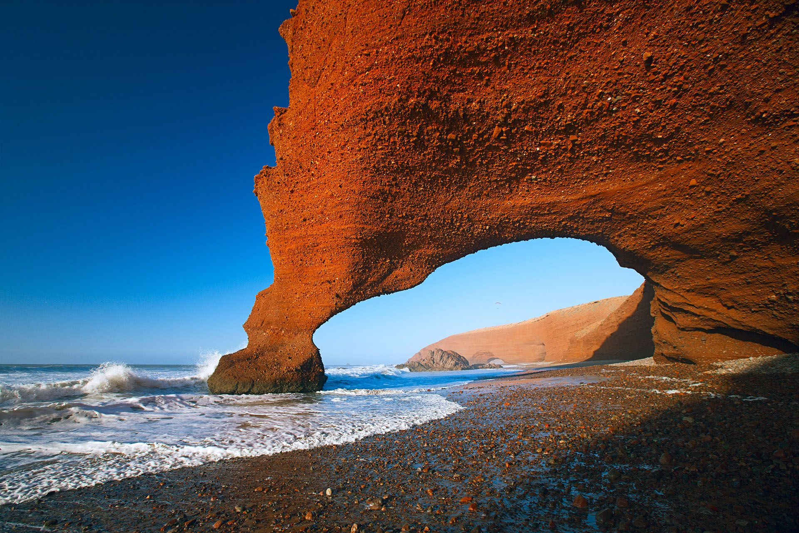
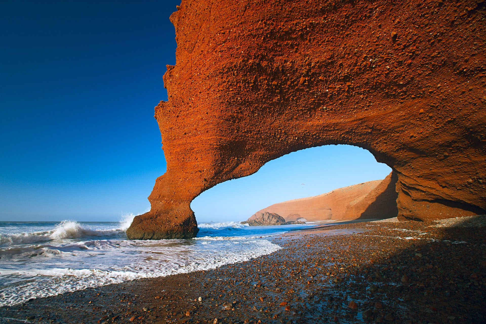
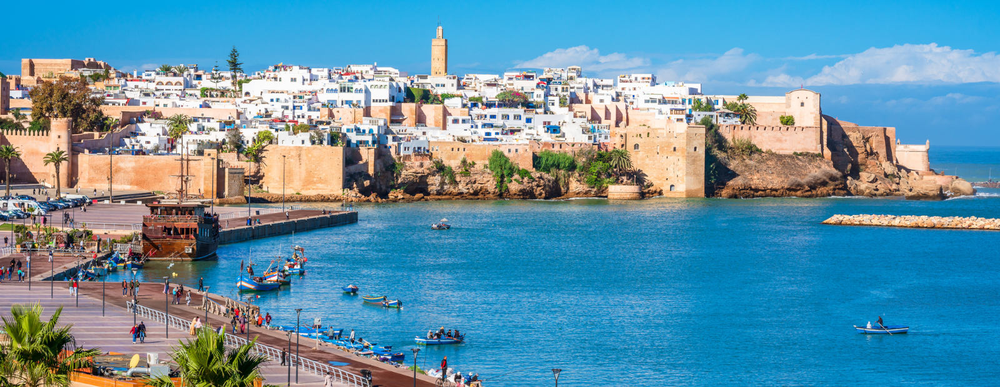
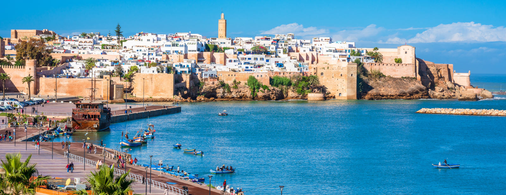

Morocco

 

 

Morocco is an amazing place to travel. If you have 10 days in the country, the best way to spend
it is by seeing the old cities and traditional markets, plus the Atlas mountains and desert scenery.
This itinerary has each of those things. You’ll start at Marrakesh, ride camels in the Sahara Desert,
and then see the cities of Fes and Chefchaouen, before ending with an epic hike up Mount Toubkal,
the
highest mountain in North Africa.
- Wander the souks of Marrakech
- Ride camels in the Sahara Desert
- Visit the blue city of Chefchaouen
- Explore historic Fes